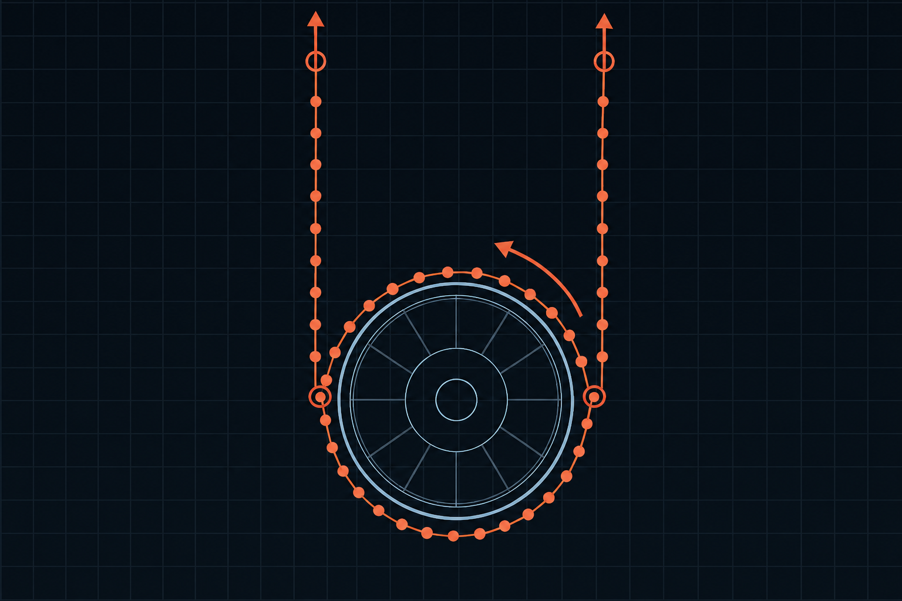

01

ONGOING RESEARCH · UNIVERSITY OF FLORIDA · 2026–PRESENT
Autonomous Tether-Assisted Capture
Developing MATLAB simulations to study post-capture despin and stabilization of a non-cooperative resident space object using controlled tether forces. My work focuses on flexible tether dynamics, contact geometry, orbital relative-motion effects, and the tradeoff between despin performance and translational energy.
MODEL101-node tether
CONTROLAngular-rate feedback
ANALYSISTension · Energy · Motion
Collaborative research under Dr. Norman Fitz-Coy alongside Bogochan Ondes.